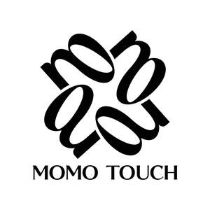

Trade Mark Journal No.2026/005 30 January 2026
UK00004291510 9 November 2025 (20,21,24,26,27,28)

- Class 20
- Soft furnishings [cushions]; Furniture and furnishings; Padded furniture; Cushions [furniture]; Leather furniture; Furniture of plastics material for bathrooms; Upholstered furniture; Hybrid beds being soft sided waterbeds [other than for medical use]; Furniture of plastic materials; Protective coverings for furniture [shaped]; High stools [furniture]; Panelling for furniture; Pouffes [furniture]; Woven timber blinds [furniture]; Furniture; Doors made of non-metallic materials for furniture; Bamboo furniture; Protective coverings for furniture [fitted]; Beds, bedding, mattresses, pillows and cushions; Upholstered convertible furniture; Furniture incorporating beds; Shelves of non-metallic materials [furniture]; Coverings (Fitted -) for furniture; Edgings of plastic for furniture; Stuffed furniture; Miniature furniture made of wood fibre; Bathroom fittings in the nature of furniture; Non-metallic fittings for furniture; Transparent doors (Non-metallic -) for furniture; Recliners [furniture]; Decorative wooden panels [furniture]; Decorative edging strips of wood for use with fitted furniture; Storage boxes for pillows [furniture]; Wooden furniture; Metal furniture and furniture for camping; Scented pillows; Furniture fittings, not of metal.
- Class 21
- Flower baskets; Flower vases; Flower pots; Pots (Flower -); Holders for flowers and plants [flower arranging]; Flower bowls; Porcelain flower pots; Ritual flower vases; Flower vases of precious metal; Covers, not of paper, for flower pots; Flower syringes.
- Class 24
- Soft furnishings; Materials for soft furnishings; Soft pelmets; Textiles for furnishings; Fabrics for the manufacture of furnishings; Furnishing and upholstery fabrics; Furnishing fabrics; Velours for furniture; Fibre fabrics for the manufacture of the exterior coverings of furniture; Silk fabrics for furniture; Textiles in the form of window furnishings; Woven furnishing fabrics; Woven fabrics for furniture; Woven fabrics for use in the manufacture of clothing for use in clean rooms; Loose furniture coverings; Coverings (Loose -) for furniture; Loose coverings for furniture; Protective coverings for furniture [loose]; Furniture coverings made of plastic materials; Coverings of plastics for furniture; Coverings of textile and of plastic for furniture (not fitted); Loose covers made of textile materials for furniture; Furniture coverings of textile; Coverings (Furniture -) of textile; Fabrics for use in the manufacture of exterior coverings for chairs; Coverings of textile and of plastic for furniture (unfitted); Furnishing fabrics in the piece; Furnishing fabrics being textile piece goods; Furniture coverings of plastic; Coverings of plastic for furniture; Protective loose covers for mattresses and furniture; Coverings for furniture; Window furnishing fabrics; Interior decoration fabrics; Textile covers [loose] for furniture; Woven fabrics for sofas; Drapes in the nature of curtains made of textile materials; Unfitted fabric slipcovers for furniture; Textile goods for use as bedding; Disposable bedding of textile; Textile fabric piece goods for the manufacture of upholstered furniture; Fabrics for manufacturing garden furniture; Furniture coverings (unfitted); Textiles for interior decorating; Woven fabrics for armchairs; Small curtains made of textile materials; Fabrics for interior decorating; Textile fabrics for making into linens; Curtains of textiles or plastic; Fireproof upholstery fabrics; Textile fabrics for use in the manufacture of furniture; Woven fabrics for cushions; Rubberized textile fabrics.
- Class 26
- Fabric appliques; Fabric appliques [haberdashery]; Silk flowers; Artificial flower wreaths; Artificial flowers of textile; Artificial flower arrangements.
- Class 27
- Carpet tiles; Tiles (Carpet -); Carpet underlay; Carpets; Carpet underlays; Carpet padding; Carpet tile backing; Carpet backing; Carpeting; Carpet runners; Carpet inlays; Bathroom tiles [carpet]; Underlay for carpets; Carpet tiles for covering floors; Carpet underlining; Floor tiles made of carpet; Carpets, rugs and mats; Carpet tiles made of textiles; Carpet tiles made of rubber; Carpet tiles made of plastics; Carpets [textile]; Moquettes [carpets]; Underlays for carpeting; Vehicle carpets; Automobile carpets; Vehicle mats and carpets; Rugs (Floor -); Primary carpet backing; Vehicles mats and carpets; Carpets for automobiles; Carpeting for vehicles; Linoleum tiles [floor coverings]; Anti-slip material for use under carpets; Rugs; Fur rugs; Hand made woollen carpets; Rugs [mats]; Bathroom rugs; Underlays for rugs; Textile floor mats for use in the home; Vinyl floor coverings; Floor mats of cork; Rugs (Door -); Vinyl floor coverings for existing floors; Floors coverings of rubber; Linoleum tiles; Linoleum for use on floors.
- Class 28
- Soft toys; Soft sculpture plush toys; Soft sculpture toys; Soft toys in the form of elks; Soft toys in the form of animals; Furnishings for doll houses; Baseballs [not soft]; Doll house furnishings; Smart plush toys; Plush toys.
Qiling Liang